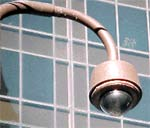

- camera -
|
You really cannot afford not to own at least one (we recommend one in the front and one in the back of your property). . Simulated (Fake) Security Camera Surveillance by The High Tech Store Simulated surveillance camera made in Malaysia Our fake surveillance camera has the look to deter crime and theft with a simulated cctv cost. PROTECT YOUR LOVED ONES, YOUR VALUABLES AND PROPERTY. These surveillance cameras are so real-looking, even professional thieves can be fooled. |
|  |
. To facilitate the briefing, I am providing the following list of questions we hope that Chief Gainer will address. If there is to be a meaningful discussion of the complexities of the MPD camera surveillance program, it is essential that the Police Department discuss this subject in its presentation. Undoubtedly, there will be other questions to be addressed as the Council and the public learn more about the camera surveillance program. . |
 |
1GB per camera of hard disk space (10GB is recommended). . Remote multi camera surveillance system Click to enlarge The Remote Witness Multi-Camera surveillance system allows you to record and display multiple cameras simultaneously from a remote location or the camera site. In addition, the system allows independent configuration of each camera to activate recording when motion is detected. The Remote Witness Multi-Cam System includes the RW-1401 Video Capture Card with 4 input and 1 output jacks, Remote Witness Multi-Cam Surveillance Software, and a detailed user's manual. |
 |
. If you have tried other low-quality bullet ccd cameras and were unsatisfied, you will be amazed with this one. This cctv camera can be easily be concealed (it is about the size of a roll of dimes) for indoor or outdoor use. This cctv camera is weatherproof, but not waterproof (it will work outside, but not in your pool. 4 ghz 2 way video spy equipment surveillance hidden cctv phone recorders . |
A good camera site: http://www.surveillancecameraplayers.org/